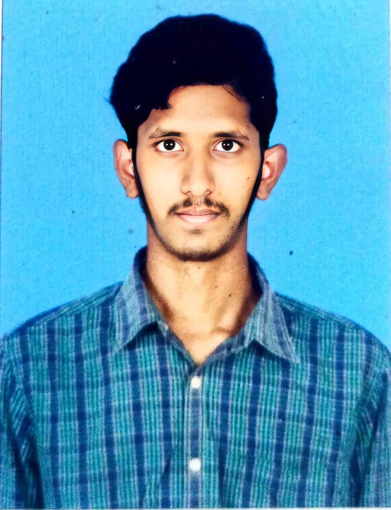

About Me
I am Ranga Prasad Alumolu, a final-year Electronics and Communications Engineering student at NRI Institute of Technology. My goal is to pursue a highly rewarding career in a challenging, collaborative environment, leveraging my skills and knowledge efficiently for organizational and personal growth.
Education
- B.Tech (ECE): NRI Institute of Technology (2021–2025) – Percentage 77
- Intermediate (MPC): Narayana Junior College (2019–2021) – CGPA 9.4
- SSC (10th): Sree Ram High School (2018–2019) – GPA 10.0
Skills
- Programming Languages:
Python, C, Java, OOP Concepts
- Web & Databases:
HTML, CSS, JavaScript
- Tools:
Git, GitHub
- Developer Tools:
MATLAB, Xilinx, Micro Wind, Arduino IDE, VS Code
Projects
Automated ECG Analysis for Cardiovascular Disease Prediction
Tech Stack: Python, Machine Learning, Deep Learning, CNN, KNN, RNN
-
Designed and developed a machine learning-based system to predict
cardiovascular disease using ECG signal data.
-
Implemented multiple algorithms including CNN, KNN, and RNN, and
compared their performance to identify the most accurate model.
-
Performed data preprocessing and feature extraction to improve
model accuracy and reliability.
-
Evaluated models using accuracy metrics and analyzed results to
understand strengths and limitations of each approach.
Internships
- Web Development Intern, BIST Technologies (Oct 2024–Apr 2025)
- Hands-on experience with HTML, CSS, JavaScript, and responsive web design.
- Built dynamic, user-friendly web pages and used version control (Git).
- Learned real-time project workflows and technology structures.
- Embedded Systems Intern, Grantley Edutech (Oct 2024–Dec 2024)
- Developed strong understanding of microcontroller architecture, sensors, and communication protocols.
- Gained proficiency in C and Python for embedded applications, contributing to coding and optimization.
- Identified and resolved hardware-software integration challenges, enhancing system reliability.
- Machine Learning Intern, BIST Technologies (May 2024–Jul 2024)
- Developed machine learning models to analyze data patterns and make predictions.
- Assisted in data preprocessing and feature selection for model training.
- Contributed to deploying machine learning applications in real-world scenarios.
- Signals & Telecommunications Intern, South Central Railway (May 2023–Jul 2023)
- Implemented signal processing techniques for railway communication systems.
- Conducted tests and analyses to improve communication network reliability.
- Collaborated with engineers to troubleshoot and optimize communication signals.
Certifications
- WIPRO Java Full Stack (Oct 2024): Completed Talent Next Java Full Stack course (Java, Spring Boot, Angular).
- HackerRank Python (Basic) (Jul 2024): Demonstrated proficiency in core Python concepts and problem-solving.
Software Developer, Full Stack Developer, Frontend Developer, Python Developer,
HTML, CSS, JavaScript, React, Node.js, Flask, MySQL, Git, GitHub,
Data Structures, OOPs, REST APIs, Machine Learning, Deep Learning,
Entry Level Software Engineer, Fresher Developer